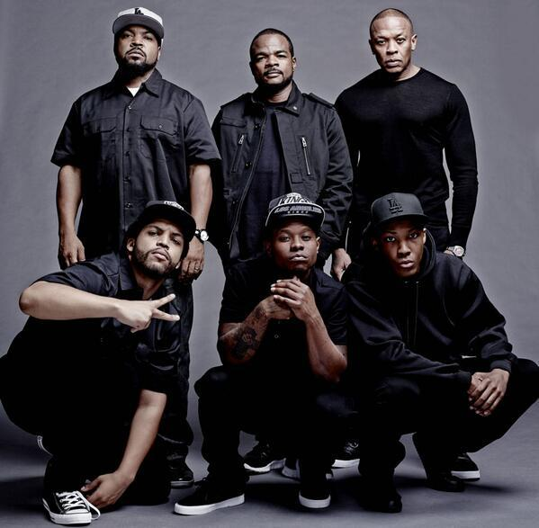
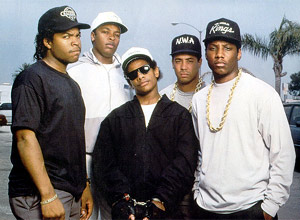
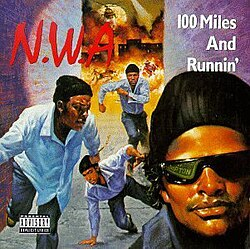
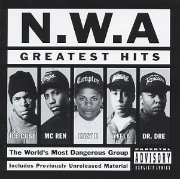

История группы N.W.A
N.W.A (Niggaz Wit Attitudes) — легендарная американская хип-хоп-группа из Комптона, штат Калифорния. Коллектив был основан в 1987 году и стал пионером жанра гангста-рэп. Их тексты открыто говорили о жизни в гетто, полицейском насилии и социальных проблемах, что вызвало большой резонанс.
Первый альбом Straight Outta Compton (1988) стал революционным — он вывел западное побережье на музыкальную карту и сделал участников (Eazy-E, Dr. Dre, Ice Cube, MC Ren и DJ Yella) культовыми фигурами в истории рэпа. Несмотря на скандалы и распад в начале 1990-х, влияние группы чувствуется до сих пор — N.W.A считаются основателями современной хип-хоп-культуры.


Дискография N.W.A
| Альбом | Год выпуска | Лейбл |
|---|---|---|
 Straight Outta Compton
Straight Outta Compton
|
1988 | Ruthless / Priority |
|  100 Miles and Runnin’ (EP) | 1990 | Ruthless / Priority |
 Niggaz4Life
Niggaz4Life
|
1991 | Ruthless / Priority |
|  Greatest Hits | 1996 | Ruthless / Priority |
| The Best of N.W.A: The Strength of Street Knowledge | 2006 | Capitol / Priority |